分布式微服务的基本概念
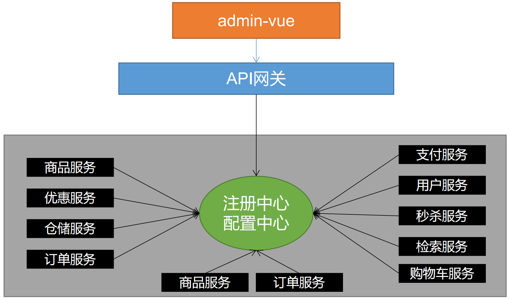- 注册中心：比如商品微服务需要调用订单微服务时，会先去注册中心找，如果有，就再去调用其中一个（可能订单微服务有3个）
- 配置中心：配置中心统一管理各个微服务的配置，在配置中心实时修改配置
- 网关：所有请求统一经过网关，由网关进行过滤，转发。
Spring Cloud Alibaba 的优势
SpringCloud 的几大痛点：
- SpringCloud 部分组件停止维护和更新，给开发带来不便；
- SpringCloud 部分环境搭建复杂，没有完善的可视化界面，我们需要大量的二次开发和定制
- SpringCloud 配置复杂，难以上手，部分配置差别难以区分和合理应用
SpringCloud Alibaba 的优势：
- 阿里使用过的组件经历了考验，性能强悍，设计合理，现在开源出来大家用
- 成套的产品搭配完善的可视化界面给开发运维带来极大的便利
- 搭建简单，学习曲线低。
在common引入依赖统一管理版本
<dependencyManagement>
<dependencies>
<dependency>
<groupId>com.alibaba.cloud</groupId>
<artifactId>spring-cloud-alibaba-dependencies</artifactId>
<version>2.1.0.RELEASE</version>
<type>pom</type>
<scope>import</scope>
</dependency>
</dependencies>
</dependencyManagement>
使用Nacos作为注册中心
添加依赖
依赖放入common
<!-- 服务注册/发现-->
<dependency>
<groupId>com.alibaba.cloud</groupId>
<artifactId>spring-cloud-starter-alibaba-nacos-discovery</artifactId>
<version>2.2.0.RELEASE</version>
</dependency>
启动Nacos服务器
下载nacos服务器：nacos server。为了和视频版本一致，我下载了1.1.3。
启动nacos：% sh startup.sh -m standalone。其中-m standalone代表着单机模式运行，非集群模式
xieshaolin@xieshaolindeMacBook-Pro bin % sh startup.sh -m standalone
/Library/Java/JavaVirtualMachines/jdk-11.jdk/Contents/Home/bin/java -Xms512m -Xmx512m -Xmn256m -Dnacos.standalone=true -cp .:/Users/xieshaolin/workpalce/nacos/plugins/cmdb/*.jar:/Users/xieshaolin/workpalce/nacos/plugins/mysql/*.jar -Xlog:gc*:file=/Users/xieshaolin/workpalce/nacos/logs/nacos_gc.log:time,tags:filecount=10,filesize=102400 -Dnacos.home=/Users/xieshaolin/workpalce/nacos -Dloader.path=/Users/xieshaolin/workpalce/nacos/plugins/health -jar /Users/xieshaolin/workpalce/nacos/target/nacos-server.jar --spring.config.location=classpath:/,classpath:/config/,file:./,file:./config/,file:/Users/xieshaolin/workpalce/nacos/conf/ --logging.config=/Users/xieshaolin/workpalce/nacos/conf/nacos-logback.xml --server.max-http-header-size=524288
nacos is starting with standalone
nacos is starting，you can check the /Users/xieshaolin/workpalce/nacos/logs/start.out
访问：http://127.0.0.1:8848/nacos/index.html
账户：nacos；密码：nacos
服务注册&发现和配置管理
配置服务提供者，从而服务提供者可以通过 Nacos 的服务注册发现功能将其服务注册到 Nacos server 上。
在
application.yml中配置 Nacos server 的地址：spring: cloud: nacos: discovery: server-addr: 127.0.0.1:8848 application: name: gulimall-coupon通过 Spring Cloud 原生注解
@EnableDiscoveryClient开启服务注册发现功能：@EnableDiscoveryClient @MapperScan("com.atguigu.gulimall.coupon.dao") @SpringBootApplication public class GulimallCouponApplication { public static void main(String[] args) { SpringApplication.run(GulimallCouponApplication.class, args); } }
服务列表会显示所有注册到 Nacos Server 的服务，包括实例数、实例健康状态等信息。
订阅者列表 会显示某个服务下有哪些客户端订阅了，以及包括客户端的版本信息等。
配置服务消费者，从而服务消费者可以通过 Nacos 的服务注册发现功能从 Nacos server 上获取到它要调用的服务。
Feign 声明式远程调用
==Feign的调用后面改了==
映入Openfeign的依赖：在创建项目的时候，已经引入
<dependency> <groupId>org.springframework.cloud</groupId> <artifactId>spring-cloud-starter-openfeign</artifactId> </dependency>编写一个接口，告诉SpringCloud这个接口需要调用远程服务。
假设调用的远程服务的方法如下：
@RestController @RequestMapping("coupon/coupon") public class CouponController { @Autowired private CouponService couponService; @RequestMapping("/member/list") public R membercoupons(){ CouponEntity couponEntity = new CouponEntity(); couponEntity.setCouponName("test"); return R.ok().put("coupon",couponEntity); } }那么对应的接口就应该这么写：
package com.atguigu.gulimall.member.feign; // 统一放在feign包下 /** * 这是一个声明式的远程调用 */ @FeignClient("gulimall-coupon") // 调用服务的名字 public interface CouponFeignService { // 调用对方服务的完整路径 @RequestMapping("/coupon/coupon/member/list") public R membercoupons(); }开启远程调用功能：
@EnableFeignClients// 告诉SpringCloud去feign报下找对应的接口 @EnableFeignClients(basePackages = "com.atguigu.gulimall.member.feign") @MapperScan("com.atguigu.gulimall.member.dao") @SpringBootApplication public class GulimallMemberApplication { public static void main(String[] args) { SpringApplication.run(GulimallMemberApplication.class, args); } }调用远程方法
@RestController @RequestMapping("member/member") public class MemberController { @Autowired private CouponFeignService couponFeignService; @RequestMapping("/coupons") public R getCoupons(){ // 在这里调用远程方法 R coupons = couponFeignService.membercoupons(); MemberEntity memberEntity = new MemberEntity(); memberEntity.setNickname("zhangsan"); return R.ok().put("member", memberEntity) .put("coupons",coupons); } }报错：
org.springframework.cloud.netflix.ribbon.RibbonLoadBalancerClient.choose原因：版本问题。我的spring boot用的是
2.6.6的版本，而课程用的是2.1.8.RELEASE。并不适配。解决方式：为了避免之后还碰到各种环境问题。我直接我老师的pom文件粘到我的项目中。
module名字不一样：重命名。修改
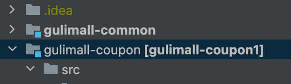<artifactId>gulimall-coupon</artifactId>有时候改了这个还没起作用，就直接用idea改：
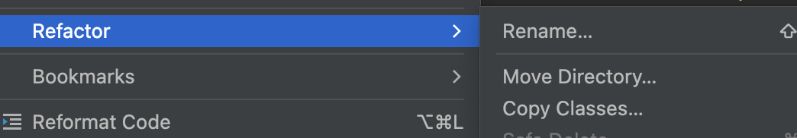数据库连不上(renren-fast)
The last packet sent successfully to the server was 0 milliseconds ago.修改：
jdbc:mysql://114.116.232.101:3306/gulimall_admin?useSSL=false设置
useSSL=false配置文件不起作用
以下是报错：
Description: Failed to configure a DataSource: 'url' attribute is not specified and no embedded datasource could be configured. Reason: Failed to determine a suitable driver class Action: Consider the following: If you want an embedded database (H2, HSQL or Derby), please put it on the classpath. If you have database settings to be loaded from a particular profile you may need to activate it (no profiles are currently active).ymal文件是红色的：
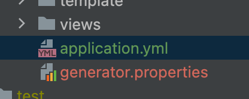要把resource表注为资源
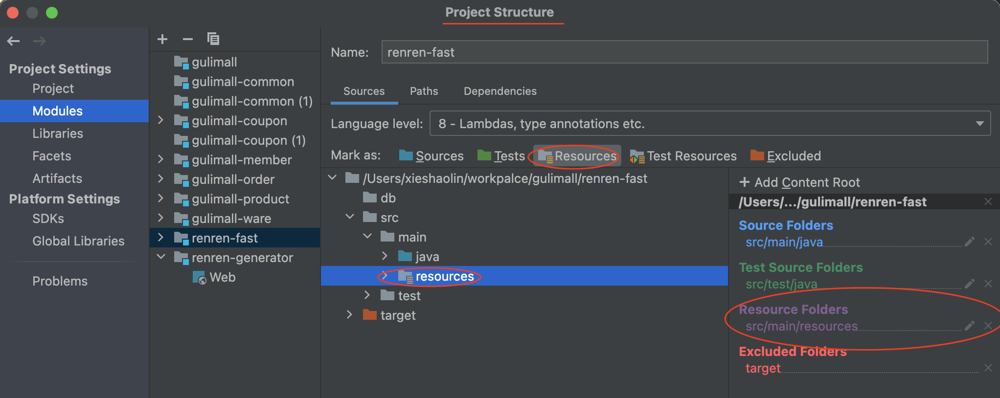
Nacos作为配置中心
统一管理配置
引入依赖，放入common模块
<!-- 配置中心来做配置管理--> <dependency> <groupId>com.alibaba.cloud</groupId> <artifactId>spring-cloud-starter-alibaba-nacos-config</artifactId> </dependency>创建一个bootstrap.properties
#应用名 spring.application.name=gulimall-coupon #Nacos服务器的id spring.cloud.nacos.config.server-addr=127.0.0.1:8848需要给配置中心默认添加一个叫 数据集（Data Id）gulimall-coupon.properties。默认规则，应用名.properties。
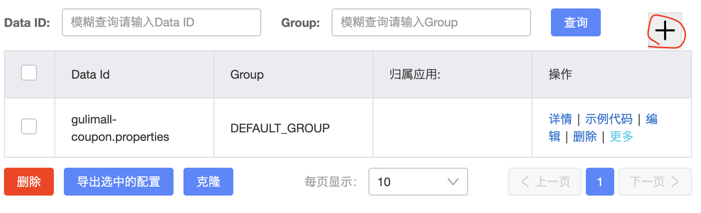给 应用名.properties 添加任何配置
动态获取配置
@RefreshScope：动态获取并刷新配置
@Value(“${配置项的名}”)：获取到配置。
@RefreshScope @RestController @RequestMapping("coupon/coupon") public class CouponController { @Value("${coupon.user.name}") private String name; @Value("${coupon.user.value}") private Integer age; @RequestMapping("/test") public R test(){ return R.ok().put("coupon",name+":"+age); } }
[!NOTE]
如果配置中心和当前应用的配置文件中都配置了相同的项，优先使用配置中心的配置。
命名空间与配置分组
创建命名空间
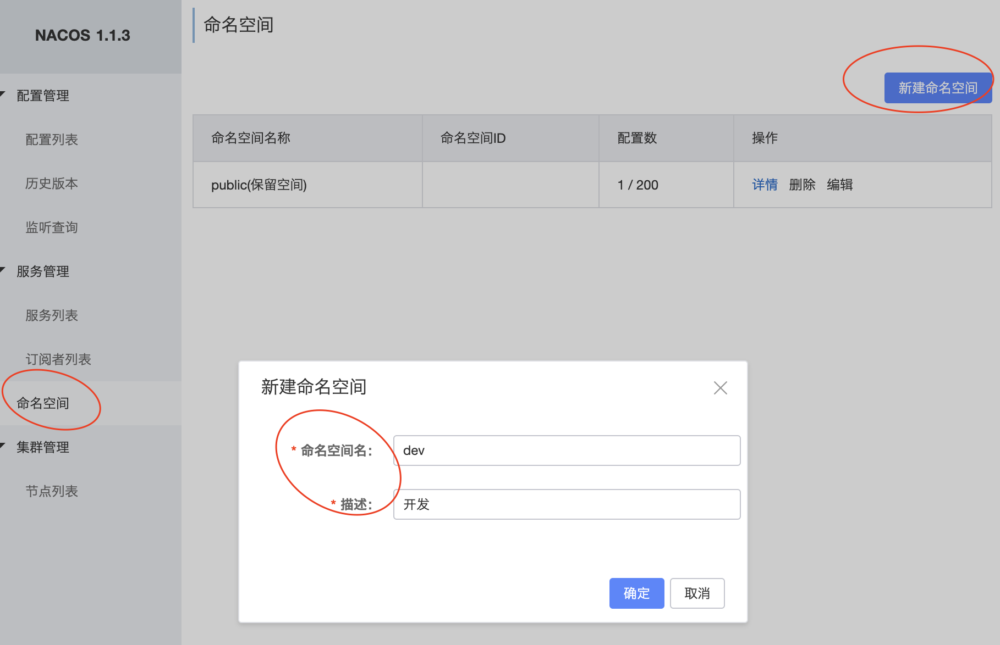会生成命名空间ID，其中public(保留空间)为默认空间
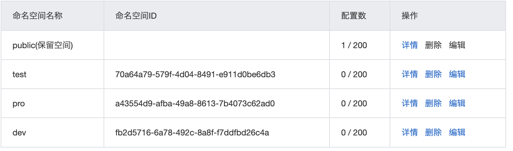要使用对应的命名空间，需要在bootstrap.properties（或者yml）上配置对应的命名空间ID
spring.cloud.nacos.config.namespace=a43554d9-afba-49a8-8613-7b4073c62ad0命名空间的作用：
- 开发，测试，生产：利用命名空间来做环境隔离。
- 每一个微服务之间互相隔离配置，每一个微服务都创建自己的命名空间，只加载自己命名空间下的所有配置
配置集：所有的配置的集合。也就是：Data ID：类似文件名
配置分组：默认所有的配置集都属于：DEFAULT_GROUP。要使用对应的配置分组，也必须加入对应的配置：
spring.cloud.nacos.config.group=prod分组名可以在创建配置的是建立：
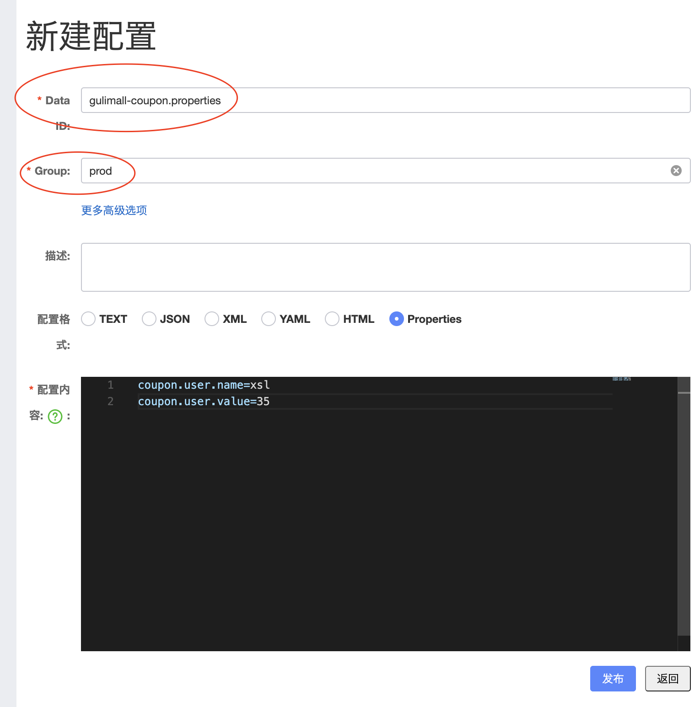配置集、命名空间和配置组的三个概念如下：
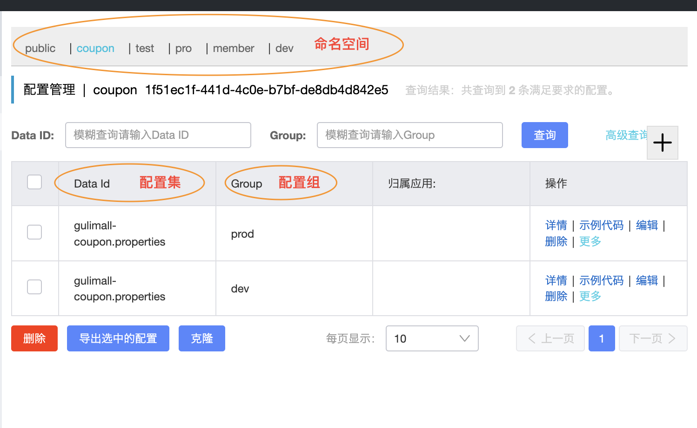
同时加载多个配置集
将所有application.yml文件里面配置都放入配置中心，并且分类：
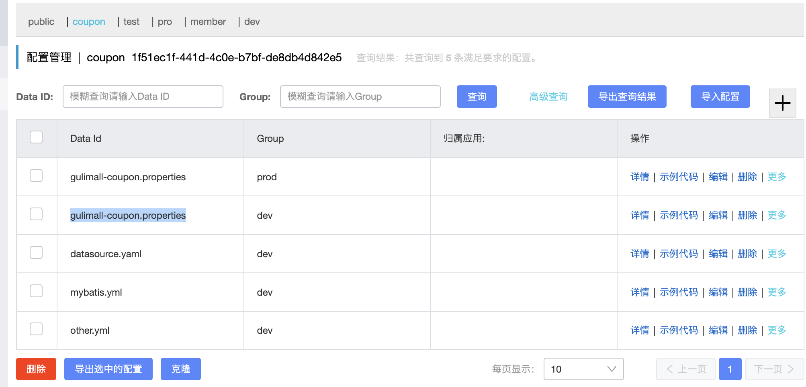同时需要在bootstrap.properties上做如下配置：
spring.application.name=gulimall-coupon
spring.cloud.nacos.config.server-addr=127.0.0.1:8848
spring.cloud.nacos.config.namespace=1f51ec1f-441d-4c0e-b7bf-de8db4d842e5
# 默认去寻找 gulimall-coupon.properties(应用名.properties)的dev组下的配置
spring.cloud.nacos.config.group=dev
#data-id 配置集；group 配置组；refresh 是否实时刷新
spring.cloud.nacos.config.ext-config[0].data-id=datasource.yaml
spring.cloud.nacos.config.ext-config[0].group=dev
spring.cloud.nacos.config.ext-config[0].refresh=true
spring.cloud.nacos.config.ext-config[1].data-id=mybatis.yml
spring.cloud.nacos.config.ext-config[1].group=dev
spring.cloud.nacos.config.ext-config[1].refresh=true
spring.cloud.nacos.config.ext-config[2].data-id=other.yml
spring.cloud.nacos.config.ext-config[2].group=dev
spring.cloud.nacos.config.ext-config[2].refresh=true
一般指定配置中心的配置文件：
# 配置的 dataId
spring.cloud.nacos.config.data-id=your-config-data-id
# 配置的 group
spring.cloud.nacos.config.group=your-config-group
# 开启配置自动刷新
spring.cloud.nacos.config.refresh-enabled=true
[!WARNING]
properties的配置文件后边不能有空格，比如下面这种情况：
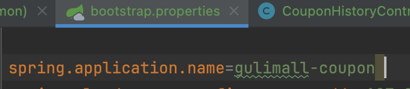这样运行的时候就会报错：
Error starting ApplicationContext. To display the conditions report re-run your application with 'debug' enabled. 2024-03-12 13:37:34.529 ERROR 85973 --- [ main] o.s.boot.SpringApplication : Application run failed org.springframework.beans.factory.BeanCreationException: Error creating bean with name 'scopedTarget.couponController': Injection of autowired dependencies failed; nested exception is java.lang.IllegalArgumentException: Could not resolve placeholder 'coupon.user.name' in value "${coupon.user.name}"
Getway 网关
引入依赖
<dependency> <groupId>org.springframework.cloud</groupId> <artifactId>spring-cloud-starter-gateway</artifactId> </dependency> <!-- common里面有nacos--> <dependency> <groupId>com.atguigu.gulimall</groupId> <artifactId>gulimall-common</artifactId> <version>0.0.1-SNAPSHOT</version> </dependency>开启服务注册发现，同时配置注册中心地址
@EnableDiscoveryClient // 开启服务的注册发现 //exclude = {DataSourceAutoConfiguration.class: //因为网关引用了common模块，common模块引用了mybatis //mybatis 会自动检查数据源，连接不上就会报错 //exclude 就是排除数据源有关的配置和操作 // 也可以在pom文件里面排除mybatis的依赖 @SpringBootApplication(exclude = {DataSourceAutoConfiguration.class}) public class GulimallGatewayApplication { public static void main(String[] args) { SpringApplication.run(GulimallGatewayApplication.class, args); } }注册中心和配置中心的相关配置：
配置中心：
bootstrap.properties# 这里是 config spring.application.name=gulimall-gateway spring.cloud.nacos.config.server-addr=127.0.0.1:8848 spring.cloud.nacos.config.namespace=e55a5dd8-c679-4de0-8e4e-d0154443e3a5注册中心：
# 这里是 discovery spring.cloud.nacos.discovery.server-addr=127.0.0.1:8848 spring.application.name=gulimall-gateway server.port=88
配置断言、路由规则
spring: cloud: gateway: routes: # 配置路由规则 - id: test_route # 唯一Id，取名字 #如果访问的是这个网站：http://localhost:88/?url=baidu #这时url=baidu，符合predicates，就会去访问：https://www.baidu.com uri: https://www.baidu.com predicates: - Query=url,baidu # 这里的第二个参数其实是正则表达式 - id: qq_route # 如果访问的是这个网站：http://localhost:88/hello?url=qq # 这时url=qq，符合predicates，就会去访问 https://www.qq.com/hello uri: https://www.qq.com predicates: - Query=url,qq
转载请注明来源，欢迎对文章中的引用来源进行考证，欢迎指出任何有错误或不够清晰的表达。可以在下面评论区评论，也可以邮件至 1909773034@qq.com